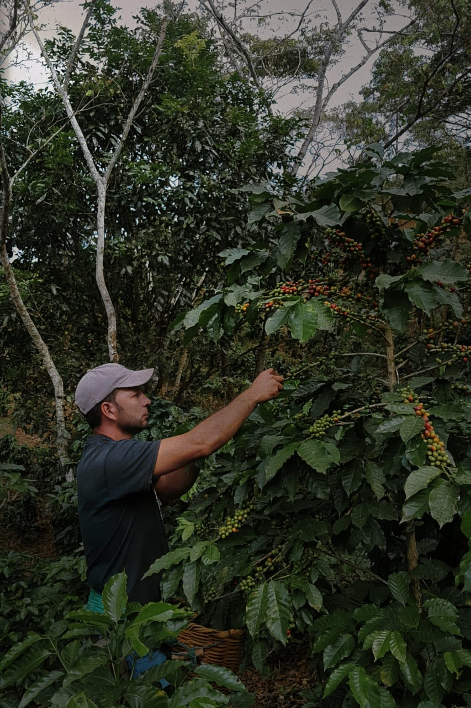
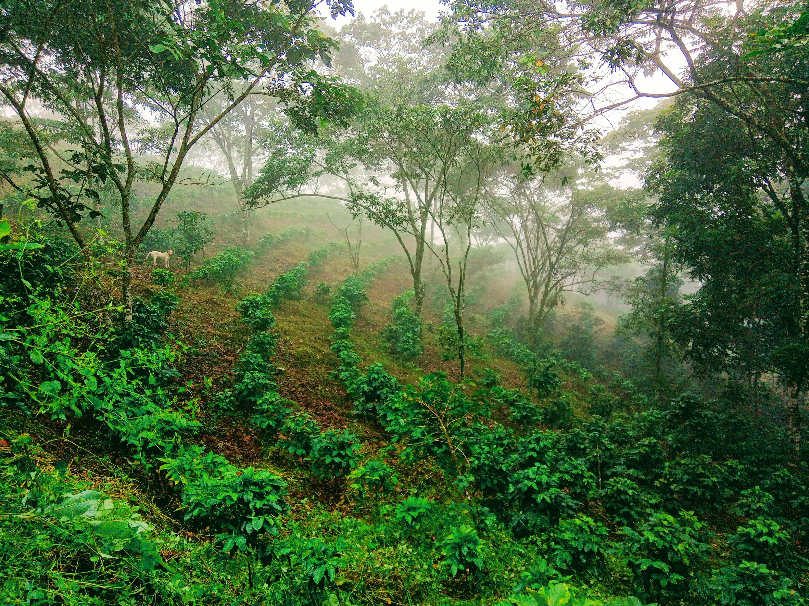
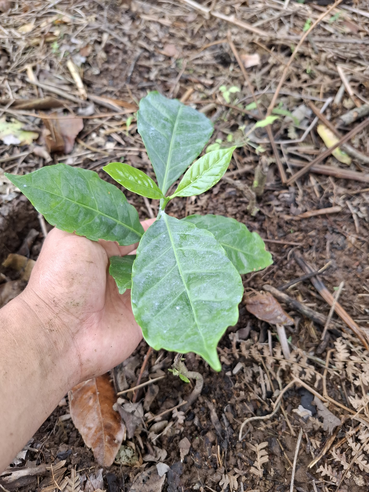
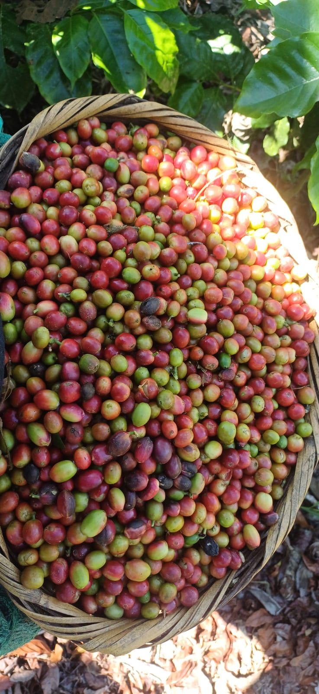
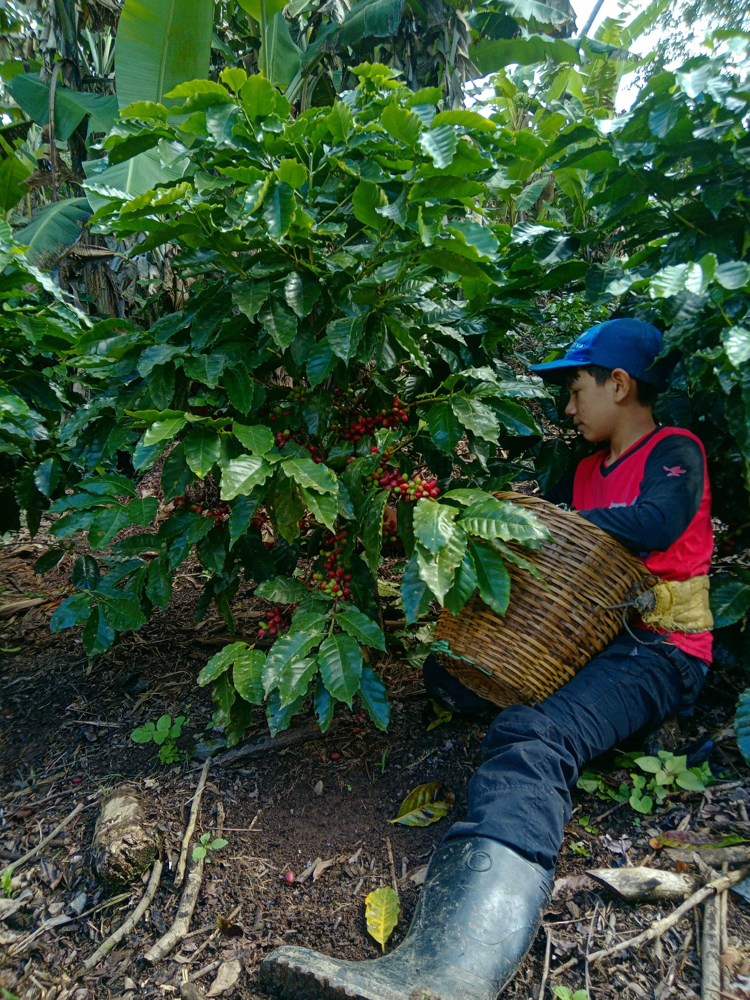
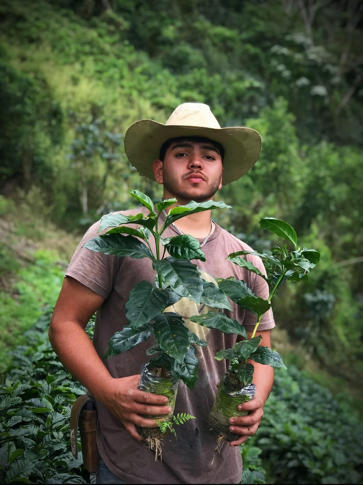

La esencia de Honduras en cada sorbo.
Café hondureño de altura, tueste medio y esencia familiar.





Nuestra historia
Sobre Café Cortero
Café Cortero es un proyecto familiar nacido del amor por la tierra y el café bien hecho. Cada grano refleja nuestro compromiso con la calidad, el respeto al entorno y el orgullo de producir café hondureño.
Desde la siembra hasta el tostado, cuidamos cada etapa de forma artesanal, combinando tradición, dedicación y experiencia para que disfrutes en cada taza un café honesto y lleno de sabor.
Descubre nuestra historia
Contáctanos
Escríbenos por WhatsApp o síguenos en nuestras redes sociales: Facebook e Instagram.